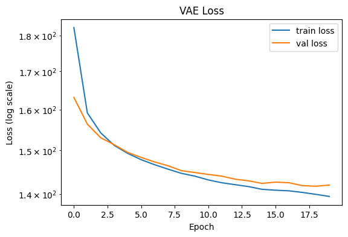
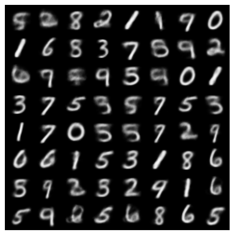
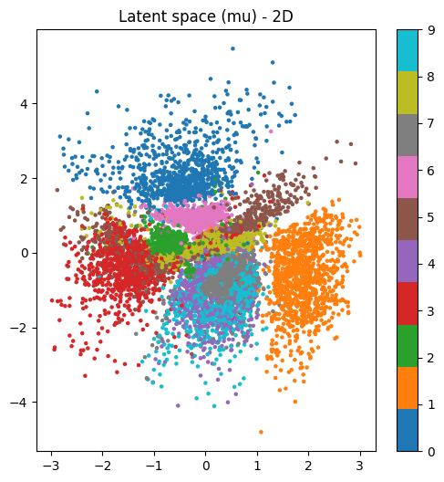
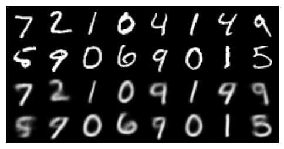

Code
Necessary Configurations to use VAE¶
!pip install torch torchvision matplotlib scikit-learn tqdm
# --- Imports e configurações ---
import os
import math
import torch
from torch import nn, optim
from torch.utils.data import random_split, DataLoader
from torchvision import datasets, transforms, utils
import matplotlib.pyplot as plt
from tqdm import tqdm
import numpy as np
from sklearn.manifold import TSNE
from sklearn.decomposition import PCA
device = torch.device("cuda" if torch.cuda.is_available() else "cpu")
print("Device:", device)
# --- Hyperparâmetros principais (modifique aqui) ---
dataset_name = "MNIST" # "MNIST" ou "FashionMNIST"
batch_size = 128
lr = 1e-3
num_epochs = 20
latent_dim = 2 # comece em 2 para visualizar; experimente 8,16,32
hidden_dim = 512
seed = 42
torch.manual_seed(seed)
Device: cuda
<torch._C.Generator at 0x703482506ab0>
Data Preparation & Slit Data¶
# --- Data preparation ---
transform = transforms.Compose([
transforms.ToTensor(), # [0,1]
])
if dataset_name.upper() == "MNIST":
ds = datasets.MNIST(".", train=True, download=True, transform=transform)
ds_test = datasets.MNIST(".", train=False, download=True, transform=transform)
else:
ds = datasets.FashionMNIST(".", train=True, download=True, transform=transform)
ds_test = datasets.FashionMNIST(".", train=False, download=True, transform=transform)
# split train -> train/val
val_size = int(0.1 * len(ds))
train_size = len(ds) - val_size
train_ds, val_ds = random_split(ds, [train_size, val_size])
train_loader = DataLoader(train_ds, batch_size=batch_size, shuffle=True, num_workers=2, pin_memory=True)
val_loader = DataLoader(val_ds, batch_size=batch_size, shuffle=False, num_workers=2, pin_memory=True)
test_loader = DataLoader(ds_test, batch_size=batch_size, shuffle=False, num_workers=2, pin_memory=True)
img_shape = next(iter(train_loader))[0].shape[1:] # channels, H, W
input_dim = int(np.prod(img_shape))
print("Image shape:", img_shape, "input_dim:", input_dim)
100%|██████████| 9.91M/9.91M [00:05<00:00, 1.88MB/s]
100%|██████████| 28.9k/28.9k [00:00<00:00, 216kB/s]
100%|██████████| 1.65M/1.65M [00:01<00:00, 1.02MB/s]
100%|██████████| 4.54k/4.54k [00:00<00:00, 6.65MB/s]
Image shape: torch.Size([1, 28, 28]) input_dim: 784
VAE Model¶
# --- VAE model ---
class Encoder(nn.Module):
def __init__(self, input_dim, hidden_dim, latent_dim):
super().__init__()
self.net = nn.Sequential(
nn.Flatten(),
nn.Linear(input_dim, hidden_dim),
nn.ReLU(),
nn.Linear(hidden_dim, hidden_dim),
nn.ReLU(),
)
self.fc_mu = nn.Linear(hidden_dim, latent_dim)
self.fc_logvar = nn.Linear(hidden_dim, latent_dim)
def forward(self, x):
h = self.net(x)
mu = self.fc_mu(h)
logvar = self.fc_logvar(h)
return mu, logvar
class Decoder(nn.Module):
def __init__(self, latent_dim, hidden_dim, output_dim):
super().__init__()
self.net = nn.Sequential(
nn.Linear(latent_dim, hidden_dim),
nn.ReLU(),
nn.Linear(hidden_dim, hidden_dim),
nn.ReLU(),
nn.Linear(hidden_dim, output_dim),
nn.Sigmoid() # output in [0,1] for BCE loss / images normalized
)
self.output_dim = output_dim
def forward(self, z):
x_hat = self.net(z)
x_hat = x_hat.view(-1, *img_shape)
return x_hat
# reparameterization trick
def reparameterize(mu, logvar):
# sample z ~ N(mu, sigma^2) by z = mu + eps * sigma
sigma = (0.5 * logvar).exp()
eps = torch.randn_like(sigma)
return mu + eps * sigma
class VAE(nn.Module):
def __init__(self, input_dim, hidden_dim, latent_dim):
super().__init__()
self.encoder = Encoder(input_dim, hidden_dim, latent_dim)
self.decoder = Decoder(latent_dim, hidden_dim, input_dim)
def forward(self, x):
mu, logvar = self.encoder(x)
z = reparameterize(mu, logvar)
x_hat = self.decoder(z)
return x_hat, mu, logvar, z
model = VAE(input_dim, hidden_dim, latent_dim).to(device)
# --- Loss function ---
# Reconstruction: binary cross-entropy (pixel-wise) or MSE. For MNIST, BCE is common.
reconstruction_loss_fn = nn.BCELoss(reduction="sum") # sum over pixels
def vae_loss(x, x_hat, mu, logvar):
# Reconstruction term (sum over pixels and batch)
recon_loss = reconstruction_loss_fn(x_hat, x)
# KL divergence between q(z|x)=N(mu, sigma^2) and p(z)=N(0,I)
# analytical form: -0.5 * sum(1 + log(sigma^2) - mu^2 - sigma^2)
kld = -0.5 * torch.sum(1 + logvar - mu.pow(2) - logvar.exp())
return recon_loss + kld, recon_loss, kld
--- Training utilities ---¶
optimizer = optim.Adam(model.parameters(), lr=lr)
def train_epoch(model, loader, optimizer):
model.train()
total_loss = 0.0
total_recon = 0.0
total_kld = 0.0
for x, _ in loader:
x = x.to(device)
optimizer.zero_grad()
x_hat, mu, logvar, _ = model(x)
loss, recon, kld = vae_loss(x, x_hat, mu, logvar)
loss.backward()
optimizer.step()
total_loss += loss.item()
total_recon += recon.item()
total_kld += kld.item()
n = len(loader.dataset)
return total_loss / n, total_recon / n, total_kld / n
def eval_epoch(model, loader):
model.eval()
total_loss = 0.0
total_recon = 0.0
total_kld = 0.0
with torch.no_grad():
for x, _ in loader:
x = x.to(device)
x_hat, mu, logvar, _ = model(x)
loss, recon, kld = vae_loss(x, x_hat, mu, logvar)
total_loss += loss.item()
total_recon += recon.item()
total_kld += kld.item()
n = len(loader.dataset)
return total_loss / n, total_recon / n, total_kld / n
Train loop (salve checkpoints e reconstructions)¶
out_dir = "vae_outputs"
os.makedirs(out_dir, exist_ok=True)
train_logs = []
val_logs = []
for epoch in range(1, num_epochs + 1):
train_loss, train_recon, train_kld = train_epoch(model, train_loader, optimizer)
val_loss, val_recon, val_kld = eval_epoch(model, val_loader)
train_logs.append((train_loss, train_recon, train_kld))
val_logs.append((val_loss, val_recon, val_kld))
print(f"Epoch {epoch}/{num_epochs} | train loss {train_loss:.4f} (recon {train_recon:.4f} kld {train_kld:.4f})"
f" | val loss {val_loss:.4f}")
# salvar reconstructions do primeiro batch de validação
model.eval()
with torch.no_grad():
batch = next(iter(val_loader))
x_batch = batch[0].to(device)[:64]
x_hat, _, _, _ = model(x_batch)
comp = torch.cat([x_batch, x_hat])
utils.save_image(comp, os.path.join(out_dir, f"recon_epoch_{epoch}.png"), nrow=8)
# salvar checkpoint
torch.save(model.state_dict(), os.path.join(out_dir, f"vae_epoch_{epoch}.pt"))
Epoch 1/20 | train loss 182.2217 (recon 178.2746 kld 3.9472) | val loss 163.1446
Epoch 2/20 | train loss 159.1858 (recon 153.8162 kld 5.3695) | val loss 156.3814
Epoch 3/20 | train loss 154.2066 (recon 148.5150 kld 5.6916) | val loss 153.0369
Epoch 4/20 | train loss 151.1981 (recon 145.3248 kld 5.8733) | val loss 151.3613
Epoch 5/20 | train loss 149.2998 (recon 143.2870 kld 6.0128) | val loss 149.5301
Epoch 6/20 | train loss 147.8186 (recon 141.7210 kld 6.0976) | val loss 148.3453
Epoch 7/20 | train loss 146.6467 (recon 140.4719 kld 6.1748) | val loss 147.2913
Epoch 8/20 | train loss 145.6143 (recon 139.3391 kld 6.2751) | val loss 146.3943
Epoch 9/20 | train loss 144.6457 (recon 138.2977 kld 6.3480) | val loss 145.2695
Epoch 10/20 | train loss 144.0065 (recon 137.6086 kld 6.3979) | val loss 144.8309
Epoch 11/20 | train loss 143.1517 (recon 136.6880 kld 6.4636) | val loss 144.4022
Epoch 12/20 | train loss 142.5093 (recon 135.9971 kld 6.5123) | val loss 144.0073
Epoch 13/20 | train loss 142.0747 (recon 135.5276 kld 6.5471) | val loss 143.3177
Epoch 14/20 | train loss 141.6406 (recon 135.0651 kld 6.5756) | val loss 142.9371
Epoch 15/20 | train loss 141.0354 (recon 134.4191 kld 6.6163) | val loss 142.3620
Epoch 16/20 | train loss 140.8359 (recon 134.1892 kld 6.6467) | val loss 142.6515
Epoch 17/20 | train loss 140.6957 (recon 134.0500 kld 6.6457) | val loss 142.5116
Epoch 18/20 | train loss 140.3433 (recon 133.6568 kld 6.6865) | val loss 141.8607
Epoch 19/20 | train loss 139.9144 (recon 133.1718 kld 6.7427) | val loss 141.7232
Epoch 20/20 | train loss 139.4536 (recon 132.7206 kld 6.7330) | val loss 141.9866
# --- Visualizar curvas de perda ---
train_loss = [t[0] for t in train_logs]
val_loss = [v[0] for v in val_logs]
plt.figure(figsize=(6,4))
plt.plot(train_loss, label="train loss")
plt.plot(val_loss, label="val loss")
plt.yscale("log")
plt.legend()
plt.xlabel("Epoch")
plt.ylabel("Loss (log scale)")
plt.title("VAE Loss")
plt.savefig(os.path.join(out_dir, "loss_curve.png"))
plt.show()

Generated Samples from the Latent Space¶
The VAE successfully generates coherent digit-like samples by decoding random latent vectors sampled from a standard normal distribution.
n_samples = 64
with torch.no_grad():
z = torch.randn(n_samples, latent_dim).to(device)
samples = model.decoder(z)
utils.save_image(samples, os.path.join(out_dir, "samples_prior.png"), nrow=8)
plt.figure(figsize=(6,6))
plt.axis("off")
plt.imshow(utils.make_grid(samples.cpu(), nrow=8).permute(1,2,0).squeeze())
plt.show()

Latent Space¶
# --- Visualizar espaço latente (latent_dim <=3: scatter, caso contrário usar PCA/t-SNE) ---
# Vamos obter mu do conjunto de teste (ou validação) para representar cada imagem com seu mu
model.eval()
zs = []
labels = []
with torch.no_grad():
for x, y in test_loader:
x = x.to(device)
mu, logvar = model.encoder(x)
zs.append(mu.cpu().numpy())
labels.append(y.numpy())
zs = np.concatenate(zs, axis=0)
labels = np.concatenate(labels, axis=0)
if latent_dim == 2:
plt.figure(figsize=(6,6))
sc = plt.scatter(zs[:,0], zs[:,1], c=labels, cmap="tab10", s=5)
plt.colorbar(sc, ticks=range(10))
plt.title("Latent space (mu) - 2D")
plt.savefig(os.path.join(out_dir, "latent_2d.png"))
plt.show()
else:
# usar PCA e t-SNE
pca = PCA(n_components=2)
z_pca = pca.fit_transform(zs)
plt.figure(figsize=(6,6))
plt.scatter(z_pca[:,0], z_pca[:,1], c=labels, s=5, cmap="tab10")
plt.title("Latent space projected with PCA")
plt.savefig(os.path.join(out_dir, "latent_pca.png"))
plt.show()
tsne = TSNE(n_components=2, perplexity=30, init='pca', random_state=seed)
z_tsne = tsne.fit_transform(zs[:5000]) # por performance, usar subset
labs = labels[:5000]
plt.figure(figsize=(6,6))
plt.scatter(z_tsne[:,0], z_tsne[:,1], c=labs, s=5, cmap="tab10")
plt.title("Latent space projected with t-SNE (subset)")
plt.savefig(os.path.join(out_dir, "latent_tsne.png"))
plt.show()

Reconstructions¶
The model successfully reconstructs digits, preserving the general shape and structure.
Some blurring and noise are expected due to the probabilistic nature of the VAE.
# --- Reconstrução lado a lado (exibir/guardar) ---
# Carregar algumas imagens test e mostrar original vs recon
with torch.no_grad():
x, _ = next(iter(test_loader))
x = x[:16].to(device)
x_hat, _, _, _ = model(x)
comp = torch.cat([x, x_hat])
utils.save_image(comp, os.path.join(out_dir, "reconstructions.png"), nrow=8)
plt.figure(figsize=(6,4))
plt.axis("off")
plt.imshow(utils.make_grid(comp.cpu(), nrow=8).permute(1,2,0).squeeze())
plt.show()
